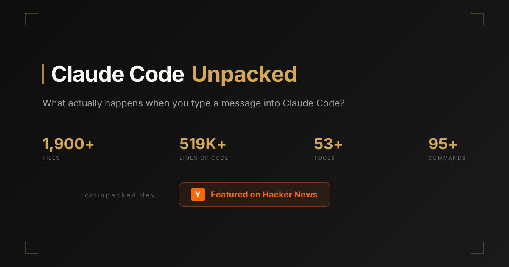

최근 AI 개발자 커뮤니티에서 꽤 흥미로운 링크 하나가 돌고 있습니다. 바로 ccunpacked.dev 입니다.
이 사이트는 Claude Code를 이루는 내부 구조를 시각적으로 풀어 보여주는 비공식 가이드입니다. 단순히 “툴이 많다” 수준이 아니라, 사용자가 메시지를 입력한 뒤 응답이 화면에 그려질 때까지 어떤 흐름을 거치는지, 어떤 종류의 도구와 명령어가 들어 있는지, 아직 공개되지 않은 기능 힌트까지 한 화면에서 탐색할 수 있게 정리해두었습니다.

개인적으로는 이런 사이트가 단순한 구경거리를 넘어서, 요즘 코딩 에이전트가 왜 강력하게 느껴지는지 이해하는 학습 자료로도 꽤 좋다고 봤습니다.
ccunpacked.dev가 뭔가요?
사이트 제목은 Claude Code Unpacked입니다. 이름 그대로 Claude Code를 “뜯어서” 보여주는 방식입니다.
첫 화면에서 바로 이런 정보를 압축해 보여줍니다.
- 약 1,900개+ 파일
- 약 519K+ 라인 규모
- 53개+ 도구
- 95개+ 명령어
그리고 아래로 내려가면 크게 다섯 축으로 내용을 구성합니다.
- The Agent Loop
사용자가 입력한 요청이 어떤 단계를 거쳐 처리되는지 - Architecture Explorer
코드베이스가 어떤 영역으로 나뉘어 있는지 - Tool System
Claude Code가 쓸 수 있는 도구를 기능별로 정리 - Command Catalog
슬래시 커맨드 전체를 범주별로 정리 - Hidden Features
아직 정식 노출되지 않았거나 feature-gated 상태로 보이는 기능들 소개
즉, 이 사이트는 단순한 소개 페이지가 아니라, 코딩 에이전트 제품을 구조적으로 읽게 해주는 인터랙티브 아카이브에 가깝습니다.
왜 이 사이트가 재미있나
저는 이 사이트의 가치가 단순히 “Claude Code에 이런 기능이 있대”를 보여주는 데서 끝나지 않는다고 봅니다.
핵심은 오히려 이런 질문에 답을 준다는 점입니다.
- 코딩 에이전트는 실제로 어떤 루프로 움직일까?
- 파일 읽기, 실행, 검색, 서브에이전트 같은 기능은 어떤 구조로 묶일까?
- 좋은 개발용 AI 도구는 모델 말고 무엇이 중요할까?
요즘 많은 분들이 GPT, Claude, Gemini 같은 모델 이름 위주로 비교합니다. 물론 중요합니다. 하지만 실제 사용감은 모델만으로 설명되지 않는 경우가 많습니다.
같은 계열 모델이어도 어떤 도구는 훨씬 유능하게 느껴지고, 어떤 도구는 답답하게 느껴지는 이유가 있죠. ccunpacked.dev는 그 차이를 하네스(harness), 즉 모델을 감싸는 소프트웨어 구조 관점에서 생각하게 만들어 줍니다.
1. Agent Loop: “메시지 하나” 뒤에 있는 실제 흐름
제가 가장 먼저 눌러본 영역은 The Agent Loop였습니다.
이 섹션은 사용자가 입력한 메시지가 실제로 어떤 단계를 거치는지 순서대로 보여줍니다. 사이트 기준으로 보면 대략 이런 흐름입니다.
- User Input
- Message Creation
- History Append
- System Prompt Assembly
- API Streaming
- Token Parsing
- Tool Detection
- Tool Execution Loop
- Response Rendering
- Post-Sampling Hooks
- Await Next Input
이걸 보고 있으면 중요한 포인트가 하나 보입니다.
코딩 에이전트는 “질문하면 답하는 챗봇”이 아니라, 입력 → 조립 → 추론 → 도구 호출 → 결과 반영의 반복 루프를 가진 시스템에 가깝다는 점입니다.
즉, 진짜 차별점은 모델 응답 한 줄이 아니라, 그 응답 전후를 어떻게 설계했는가에 있습니다.
2. Tool System: 에이전트는 결국 도구 설계의 싸움
세 번째 섹션인 Tool System도 아주 흥미롭습니다. 도구를 단순 나열하지 않고 카테고리로 보여주는데, 대략 이런 식입니다.
- File Operations
- Execution
- Search & Fetch
- Agents & Tasks
- Planning
- MCP
- System
- Experimental
예시로 보이는 도구도 꽤 구체적입니다.
- 파일 읽기/수정/쓰기
- Bash 실행
- 웹 검색 / 웹 가져오기
- 서브에이전트 생성
- 태스크 생성/조회/업데이트/중지
- 계획 모드 진입
- MCP 리소스 읽기
- 사용자 질문 / 투두 관리 / 설정 수정
이걸 보면 요즘 에이전트가 왜 강해 보이는지 더 명확해집니다.
에이전트의 성능은 모델만의 성능이 아니라, 도구를 얼마나 구조적으로 연결했는지의 결과이기 때문입니다.
특히 코딩 작업은 원래부터 이런 일들의 조합입니다.
- 파일 열기
- 심볼 찾기
- 명령 실행
- 결과 해석
- 작업을 쪼개기
- 다시 합치기
그래서 코딩 에이전트는 본질적으로 “말 잘하는 모델” 이 아니라 “도구를 잘 쓰는 작업 시스템” 으로 봐야 합니다.
3. Command Catalog: 생각보다 제품이 깊다
네 번째 섹션은 Command Catalog입니다. Claude Code의 슬래시 명령어를 범주별로 정리해 둡니다.
카테고리만 봐도 범위가 꽤 넓습니다.
- Setup & Config
- Daily Workflow
- Code Review & Git
- Debugging & Diagnostics
- Advanced & Experimental
눈에 띄는 명령어들도 많습니다.
/config,/permissions,/model/compact,/memory,/context,/summary/review,/commit,/diff,/issue/status,/stats,/cost,/usage/voice,/ide,/plugin,/remote-control
이걸 보면 Claude Code가 단순히 “코드 수정기”가 아니라, 세션 운영, 컨텍스트 관리, 작업 추적, 디버깅, 협업 흐름까지 포함한 하나의 작업 환경으로 확장되고 있다는 걸 알 수 있습니다.
즉, 사용자는 채팅창 하나를 보고 있지만, 실제 제품은 IDE + 터미널 + 태스크 시스템 + 세션 메모리 + 권한 관리가 합쳐진 구조에 더 가깝습니다.
4. Hidden Features: 제품의 미래 방향이 살짝 보인다
가장 구경하는 재미가 있는 구간은 역시 Hidden Features 입니다.
여기에는 정식 공개 전이거나 feature-gated로 보이는 항목들이 정리되어 있습니다. 예를 들면 이런 이름들이 보입니다.
- Buddy
- Kairos
- UltraPlan
- Coordinator Mode
- Bridge
- Daemon Mode
- UDS Inbox
- Auto-Dream
물론 이런 항목은 실제 출시 여부나 최종 형태가 바뀔 수 있습니다. 그래서 그대로 확정 정보처럼 받아들이는 건 조심해야 합니다.
그럼에도 불구하고 방향성은 읽을 수 있습니다.
예를 들면 이런 흐름이 보이죠.
- 더 긴 계획 세션
- 여러 에이전트의 분업
- 원격 제어와 모바일 연결
- 세션 간 기억 정리
- 백그라운드 실행
이건 결국 코딩 에이전트가 앞으로 단일 응답형 도구에서 지속형 작업 환경으로 이동하고 있다는 신호로 읽힙니다.
이 사이트를 어떻게 보면 좋을까
ccunpacked.dev는 그냥 “와 기능 많네” 하고 끝내기엔 아깝습니다. 저는 세 가지 관점으로 보면 좋다고 생각합니다.
1) 개발자라면: 에이전트 제품 설계 참고 자료
에이전트 제품을 만들거나 MCP, 툴콜링, 워크플로우 자동화에 관심 있다면 꽤 좋은 참고 자료입니다.
특히 아래 같은 질문에 도움이 됩니다.
- 도구 카테고리는 어떻게 나누는가?
- 세션 기능은 어디까지 제품으로 넣는가?
- 서브에이전트와 태스크 시스템은 어떤 식으로 엮는가?
2) 사용자라면: “왜 어떤 도구는 더 똑똑하게 느껴지는가” 이해
좋은 에이전트는 모델만 좋은 게 아니라,
- 컨텍스트를 잘 모으고
- 도구를 잘 구조화하고
- 작업을 계속 이어가고
- 명령과 상태를 잘 관리합니다.
이 사이트는 그걸 아주 직관적으로 보여줍니다.
3) 교육자라면: AI 에이전트 구조를 설명하는 사례
코난쌤처럼 AI를 교육적으로 설명해야 하는 입장에서는, 이 사이트가 꽤 좋은 사례가 될 수 있습니다.
왜냐하면 “에이전트”라는 말을 추상적으로 설명하는 대신,
- 입력
- 프롬프트 조립
- API 호출
- 도구 감지
- 실행 루프
- 결과 렌더링
처럼 실제 구조로 풀어 설명할 수 있기 때문입니다.
아쉬운 점도 있다
물론 이 사이트를 볼 때 주의할 점도 있습니다.
첫째, 비공식 정리입니다. 사이트 하단에도 공식 소속이 아니고, 공개적으로 확인 가능한 소스 기준이며 일부는 틀리거나 오래됐을 수 있다고 적혀 있습니다.
둘째, 이런 구조 해설은 어디까지나 큐레이션된 해석입니다. 즉, 전체 맥락을 모두 보여준다기보다, 흥미로운 부분을 사람이 읽기 좋게 재배열한 결과물에 가깝습니다.
셋째, 숨겨진 기능 섹션은 특히 더 조심해서 봐야 합니다. “있다”와 “곧 나온다”는 전혀 다른 이야기이기 때문입니다.
그래도 저는 이런 한계까지 포함해서, 이 사이트가 충분히 볼 가치가 있다고 생각합니다. 오히려 공식 문서보다 더 빠르게 감을 잡게 해주는 면도 있습니다.
한 줄 정리
ccunpacked.dev는 Claude Code의 내부 구조를 구경하는 사이트가 아니라, 현대 코딩 에이전트가 어떤 방식으로 설계되는지 감각적으로 이해하게 해주는 시각 자료입니다.
AI 코딩 도구를 그냥 “성능 좋은 챗봇” 정도로 보고 있었다면, 이 사이트를 보면 생각이 조금 바뀔 수 있습니다. 진짜 차이는 모델 이름 하나보다, 그 위에 얹힌 도구·상태·메모리·작업 루프 설계에서 더 많이 나오기 때문입니다.
관심 있으시면 직접 둘러보세요.
- 사이트: https://ccunpacked.dev
- Hacker News 반응도 함께 보면 흐름 읽기에 좋습니다.
FAQ
Q1. ccunpacked.dev는 공식 Anthropic 사이트인가요?
아닙니다. 비공식 시각 가이드입니다. 공개적으로 확인 가능한 소스 기준으로 정리된 사이트로 보는 편이 맞습니다.
Q2. 이 사이트에서 가장 볼만한 섹션은 무엇인가요?
개인적으로는 The Agent Loop와 Tool System이 가장 좋았습니다. 코딩 에이전트가 왜 단순 챗봇과 다른지 바로 감이 옵니다.
Q3. Hidden Features는 믿어도 되나요?
재미있게 볼 수는 있지만, 출시 확정 정보처럼 받아들이면 안 됩니다. 기능 플래그나 실험 흔적 수준으로 보는 게 안전합니다.
Q4. 교육 자료로 활용할 만한가요?
그렇습니다. 에이전트 구조를 추상적으로 설명하는 대신, 입력→프롬프트 조립→도구 호출→응답 생성 흐름으로 구체적으로 보여줄 수 있어서 설명용 사례로 좋습니다.
Q5. 이 사이트를 보면 결국 무엇을 배우게 되나요?
요즘 강한 코딩 에이전트는 모델 하나로 설명되지 않고, 하네스와 도구 체계, 메모리와 태스크 구조까지 포함한 시스템 설계로 이해해야 한다는 점입니다.